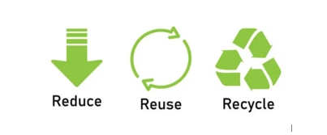

We believe in the power of the three Rs—Reduce, Reuse, Recycle—to create a more sustainable and eco-friendly world. These principles are at the core of our mission to address the challenges of plastic waste and promote responsible consumption. Here's how you can join us in making a positive impact:
Reducing your plastic consumption is the first step towards a greener lifestyle. Consider these tips:
Embracing the concept of reuse helps extend the life of products and reduces the demand for new resources. Here's how you can incorporate reusability into your daily routine:
Recycling is a crucial part of the waste management process. Follow these guidelines to recycle effectively:
By adopting these practices, you contribute to a sustainable future and help preserve the environment for generations to come. Join us in the journey towards a world with less waste and more conscious choices.